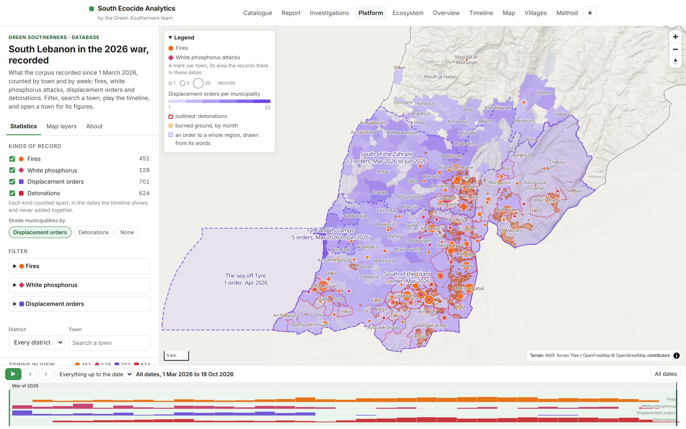
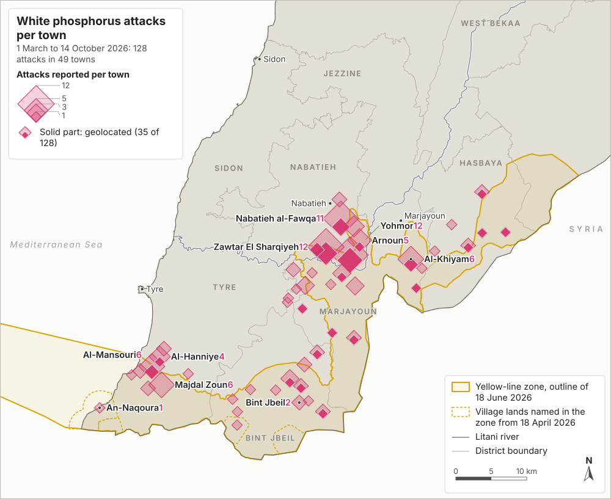
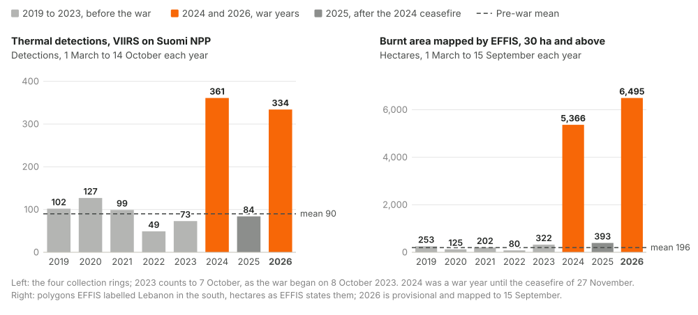

Ecocide, Urbicide and Ethnocide in South Lebanon
The short edition: evidence from the 2026 war, 1 March to 14 October 2026
Draft, under reviewThis edition is shared for review. Figures and wording may change before the final edition.
About this report
How to cite
Green Southerners (2026). Ecocide, Urbicide and Ethnocide in South Lebanon. Short edition, draft for review, November 2026. https://greensoutherners.github.io/south-ecocide-analytics/report/short.html
This edition
November 2026, draft for review. The figures were measured on 17 November 2026 from the Green Southerners corpus. The report counts Beirut calendar days from 1 March to 14 October 2026.
Reading the figures
- Each kind of record is counted apart. Fires, white phosphorus attacks, displacement orders and detonations are never added together.
- A count of records is not a count of events.
- Days are Beirut calendar days. Earlier years appear only as a comparison, never as a series of their own.
- The report publishes statistics, never records: counts, sums and shares by week, month and town.
Summary
From 1 March to 14 October 2026 the Israeli army ordered the population of South Lebanon out and struck its border villages and the front along the Litani around Nabatieh with white phosphorus. Then, inside the zone it holds behind the "yellow line", reported detonations and demolitions multiplied, and fires burned at rates far above anything the season or the pre-war years explain. Taken together, the evidence describes most of the south ordered empty, and the villages of that zone being made uninhabitable: their land, their homes and their communities.
The escalation began on 2 March 2026, and from 4 March the Israeli army repeatedly told all residents of the south to move north of the Litani, then north of the Zahrani1. A cessation of hostilities took effect at 00:00 Beirut time on 17 April2, and the next day the Israeli military announced a "yellow line" in southern Lebanon, with its forces south of it3,4; we call the ground behind it the yellow-line zone. The Displacement Tracking Matrix of the International Organization for Migration (IOM) estimated 1,208,869 people internally displaced across Lebanon on 16 April, its highest count of the war5, and still 329,686 on 29 September6: its estimates for the whole country, not counts of our corpus.
Four kinds of evidence, counted apart
A town named in an order is not an attack, and a fire is not a demolition, so the four kinds are never added together. Nor is a record an event: one announcement can name dozens of towns.
The figures rest on published sources preserved with a content hash, on satellite sensors and on sharp imagery, checked along the steps of the Berkeley Protocol7. Absence is never a finding: "no attack found" means none was found in these sources. Each chapter of this short edition ends with a link to the chapter of the full report that measures the same figures in full. The report is the work of the Green Southerners team; the records behind it and the Visual Archive of Attacks and Damage are available on request at info@greensoutherners.org.
In the full report: the Summary.
Chapter 1 The war, the south and what we documented
This chapter dates the war of 2026 in South Lebanon, defines the four kinds of record the report counts, and says in brief what we collected, how we kept it and how far it can be trusted.
1.1 The south and the war of 2026
The report covers the South and Nabatieh governorates: 2,009 square kilometres from Sidon and Jezzine to the Blue Line with occupied Palestine, and from the coast at Tyre and Naqoura to the slopes of Mount Hermon (Figure 1). Our list of localities holds 354 towns and villages there. Most of the land is farmed or open: farmland covers 38% of it on the Ministry of Energy and Water's land-use map, and grassland and scrub 40%. A village here is its houses, and also its groves and fields, its springs, its cemetery and its place of worship. That is why an environmental organisation documents this war, and why the report reads what it did to the land, to homes and to communities together, while it counts each kind of act apart.
![Map of South Lebanon: the South and Nabatieh governorates shaded, with the boundaries and names of the Tyre, Sidon, Jezzine, Nabatieh, Bint Jbeil, Marjayoun and Hasbaya districts, the Litani river, Beaufort Castle and ten main towns. The yellow-line zone, outlined in yellow, covers the land along the border with occupied Palestine from An-Naqoura through Bint Jbeil and Marjayoun to the Hasbaya district, with a part at sea; dashed outlines mark village lands named in the zone from 18 April 2026. An inset locates the frame within Lebanon.](figures/maps/study-area.svg)
The war began with the escalation of 2 March 2026, from which the UN Office of the High Commissioner for Human Rights (OHCHR) dates large-scale Israeli airstrikes, shelling and ground incursions in Lebanon; from 4 March Israeli forces told all residents of the south to move north of the Litani, then north of the Zahrani1. A cessation of hostilities took effect at 00:00 on 17 April, Beirut time2, and the next day the Israeli military said it had established a "yellow line", with its forces south of it3,4. Israel and Lebanon signed a framework agreement in Washington on 26 June8, and on 27 July the UN High Commissioner for Human Rights said that Israeli forces "continue to occupy significant Lebanese territory in the south"9. The ceasefire did not end the attacks, and no source we have read states that the war ended before 14 October 2026, the last day the data holds.
We call the ground between the yellow line and the Blue Line the yellow-line zone. The corpus holds one outline of it, drawn on 18 June 2026 by a public online map service; inside the two governorates it covers 30% of the land. The test is spatial and the outline is applied to the whole window, so "inside the zone" before 18 April means ground later inside it. Whether the zone is occupied territory in law turns on effective control, not on what the occupier calls it10.
1.2 Four kinds of record, counted apart
The window runs over Beirut calendar days from 1 March 2026 to 14 October 2026; nothing earlier is counted, and earlier years appear only as a comparison for the fires. Four kinds of act are measured, each in its own colour and never added to another (Figure 2).
- Displacement orders (violet): a town or region named in an order the Israeli army published, 701 records from 145 announcements. A place named, not people moved.
- White phosphorus attacks (pink): white phosphorus reported at one town on one Beirut day, 128 attacks, geolocated where a sensor or matched footage placed them and otherwise placed at their village.
- Fires (orange): one fire the corpus holds, seen by NASA's satellite sensors (FIRMS), mapped by the European Forest Fire Information System (EFFIS) or known from a report, 565 fires. A fire is linked to an attack documented at its town on a day of the fire, or named by its own source: an association, not proof that the attack lit it.
- Detonations and demolitions (red): a report of buildings blown up or demolished in one village on one day, 624 reports; not a count of explosions or of buildings.
![Four stacked lanes of weekly bars sharing one time axis from March to October 2026, each on its own scale: displacement orders, highest in the first week of March and again from late April to early June, then almost none; white phosphorus attacks, highest in late March and thinning after April; fires, low in spring and high from late June to September, most of them linked to an attack; detonations and demolitions, a small rise in April, a dip in May and June, then high from July to early October. A vertical rule marks the ceasefire and the yellow line of 17 and 18 April.](figures/charts/weekly-lanes.svg)
The corpus does not collect every kind of attack, so a total across kinds would claim a completeness it does not have. The report publishes statistics, never records, and counts no one killed, injured or displaced; where it gives such figures they are other organisations', cited as theirs.
1.3 What we collected
The media. We follow 20 channels on Telegram with 38 keywords in Arabic and English, and searched 71 accounts on X for white phosphorus: the Lebanese and international press, official and other publishers, among them the National News Agency, L'Orient-Le Jour, An-Nahar, Al Jadeed, LBCI and Al Jazeera. A saved message becomes a record only by the written rules of its kind. We also hold the whole text history of the channels we follow, 426,811 messages of the window, in which each fire and order is searched for a reported attack at its town and day. The orders come from the Israeli army's own announcements, collected as they appeared; its channel no longer holds its messages from before 16 October 2026, so our hashed copies are now the record.
Satellites and sensors. NASA FIRMS gave 1,185 thermal detections in the window and Copernicus EFFIS 346 burnt areas in Lebanon; we measured the burn scars of 242 fires on Sentinel-2, and read sharp pictures at 0.3 m from OnGeo Intelligence house by house over 23 towns. A sensor shows heat, burnt or changed ground at a place and time, never what caused it.
Our field members and the Visual Archive of Attacks and Damage. Green Southerners' field members photographed and filmed what was done to the south's villages, fields and woodland, and our researchers gathered what others published. The Visual Archive of Attacks and Damage holds hundreds of these images and videos, at least 770 in its folders on attacks and damage alone (Figure 3). It is not linked to the records, and no figure is counted from it.

The community map and open-source data. Open maps hold a community's places only in part: OpenStreetMap names only 113 of the 519 places of worship it maps in the two governorates. So we shared a community map with local communities, for them to add the cultural sites missing from OpenStreetMap, Google Maps and the Ministry of Culture's register; its submissions are not part of this edition's figures. The records are read against 32 open and official reference datasets, from OpenStreetMap's buildings and places to OCHA's boundaries, the Key Biodiversity Areas and the land cover of 2025. They describe the land as it was before the war, not the war itself.
The tool we built. The Green Southerners team designed and runs its own documentation platform, one spatial database with a web interface, which carries each record from collection to building, geolocation and preservation and logs every change (17,917 of them). Its public face, South Ecocide Analytics, publishes statistics only: a reader can show or hide each kind, filter it and play the weeks on a timeline (Figure 4).

1.4 A method of trust: the Berkeley Protocol
We hold the evidence behind every figure to the Berkeley Protocol on Digital Open Source Investigations of the UN human rights office and the University of California, Berkeley7: professional guidance, not law, on finding, keeping and checking public posts, pictures and satellite imagery so that fact-finders can rely on them. Its phases run through every kind of record, the fires and the white phosphorus attacks above all.
- Preservation. Each source is captured and fixed with a SHA-256 hash when it is collected, and copied to a public web archive where it allows: every order source (100%) and 99.7% of the fires' report sources, but fewer white phosphorus and detonation sources, because the archive throttled our requests and refuses X.
- Verification. The source, the file and its content are examined together: pictures are searched for earlier copies, each detonation file is kept only if it shows the blast or its smoke, and a detonation report stands only on a source of its own Beirut day.
- Placing. A white phosphorus attack is placed by matched footage or a sensor, never by an average, and otherwise at its village's point, which places the village, not the event.
How well each record is evidenced is derived from what it holds, not typed in, and nothing is thrown away. The page shows statistics, not the evidence; the records are available on request (Section 8.2).
In the full report: Chapter 1, the south, the war and the research question; Chapter 2, the data we collected; Chapter 3, the Berkeley Protocol and how we applied it.
Chapter 2 Displacement
From the first days of the escalation the Israeli army ordered the people of South Lebanon out of their towns, in announcements it published itself. The orders named most of the towns of the south, told everyone south of the Zahrani to leave, went on through the ceasefire to a peak in May, and moved north until mid June.
2.1 How much of the south the orders named
A record is a town, or a region, named in an order: not an order, and not a number of people. The 701 records of the window come from 145 announcements and name 248 distinct towns. Of the 354 towns of the South and Nabatieh governorates, the orders named 228 one by one (64%), among them 94% of the towns of the Nabatieh district and 81% of Bint Jbeil's. Orders to whole regions told everyone south of the Zahrani to leave (12 records): drawn from their words, that area covers 84% of the two governorates (Figure 5). At this breadth the orders did not clear a line of contact: they named most of the inhabited south. The UN human rights office warned on 6 March that blanket orders of this breadth were very difficult to comply with and risked amounting to prohibited forced displacement11.

2.2 A first-week burst, a peak in May, a move north
The first week was the busiest: 161 records, naming 51% of all the towns the orders would ever name. The ceasefire came before the orders' peak, not after it: 42.0 records a week before 18 April, 49.5 from then to 14 June, and May the busiest month. The orders moved north. In March 63% of the records named towns south of the Litani; in June 3% did, and 90% named towns north of it in the two governorates. Before 18 April 25% of the records naming a town named one inside the yellow-line zone; from that day, 3%. After the week of 8 June 2026 the corpus holds only 3 order records. The silence is unlikely to be only the collection's, since the warnings relayed in our archive of media channels collapse in the same weeks.
2.3 Followed by attacks
For each order the corpus asks whether attack evidence lies at the town it named between the posting of the order and the end of the next Beirut day, in its own records, an open feed of reported attacks and the media archive; a relayed copy of the warning itself never counts. Of the 664 orders that could be checked, 71.5% were followed by attack evidence, above all reports of airstrikes, and those issued from 18 April more often (76.5%) than those before it (63.5%). The link is one of time and place: it shows that most towns ordered out were reported struck within a day, not that the orders announced the strikes. Customary law forbids ordering the displacement of civilians, or forcibly transferring the civilian population of an occupied territory, unless their security or imperative military reasons demand it, and gives the displaced the right to return as soon as those reasons cease12,13. Set against these rules, the orders are hard to read as a temporary measure for the safety of the people they moved; that is an inference from breadth, timing and what followed, not a measure of intent.
2.4 How many people were displaced: IOM's estimates
The corpus counts towns named in orders, never people, and the orders state no number of people. The estimate United Nations bodies quote is that of IOM's Displacement Tracking Matrix, which counts the people displaced across Lebanon on a given day through some 1,450 key informants, and which OCHA and UNHCR relay6,14. We cite its figures as it gives them and never add them to, or set them against, a figure of ours.
IOM recorded 1,208,869 internally displaced people across Lebanon on 16 April 2026, its highest count of the war5. On 18 April it counted 827,702 still displaced and 400,593 who had gone back, returns it said "cannot be considered permanent"15, and a renewed rise brought the count to 963,497 on 4 June16. On 29 September, its last count before the end of our period, it still recorded 329,686 people displaced, against 877,203 who had begun returning; by its projection, Bint Jbeil was the district of origin of 89,414 of them (27 per cent), Nabatieh district of 82,654 (25 per cent) and Tyre of 72,274 (22 per cent)6. The Secretary-General reported some 55 Lebanese villages in the area reaching up to 10 km north of the Blue Line on the map the Israeli army published on 19 April, and villages near the Blue Line largely inaccessible17. We found no United Nations or IOM count of the people displaced from that area.
In the full report: Chapter 4, forced displacement orders, with the districts, the months, the records of each kind at ordered towns and every outside estimate of people.
Chapter 3 White phosphorus
From the first week of the escalation, white phosphorus was fired on the border villages of South Lebanon and on the front along the Litani around Nabatieh. We recorded 128 attacks at 49 towns, most of them in March and April. Where an attack can be placed on the ground, it fell close to houses more often than not, at the edge of a village or on the land around it.
3.1 When and where
A record is white phosphorus reported at one town on one Beirut day, not a count of shells or strikes. The first attacks fell in the week of 2 March 2026, the week of the first displacement orders: the two ran side by side. March alone holds 49 attacks. The weekly rate fell from 8.8 before 18 April to 2.6 after it, and did not rise after the yellow line was announced, as the detonations and fires did; nor did it stop with the cessation of hostilities, 68 attacks dating from 18 April.
All the attacks fell south of the Zahrani, in two groups (Figure 6). 80 fell at 42 towns between the border and the Litani, from An-Naqoura to the Hasbaya hills; the other 48 at only 7 towns on the Litani's north bank around Beaufort Castle and Nabatieh, the most attacked of all, led by Yohmor (12) and Zawtar El Sharqiyeh (12). White phosphorus followed the front: first the border villages, the ground the Israeli army came to hold, then the towns on the Litani at that ground's northern edge and just beyond it.

3.2 Close to houses
Each attack is placed by one method, never by an average: by footage matched to the terrain (within about 120 m), by a satellite sensor (within about 500 m), or at its village's point. 35 attacks are geolocated, and 63% of them fell within 100 m of a mapped building, though only 34% in mapped built-up land. Against random points on the land of the same localities, they lie nearer to buildings (65% against 51% within 100 m), but on so few points the difference could still be chance (one-sided p = 0.08): suggestive, not conclusive. The sources more often name the outskirts, hills, valleys, woodland and farmland of a town, and in a few towns its neighbourhoods. The phosphorus fell mostly at the edges of villages and on the land around them, where people live beside the land they live from.
3.3 The rules, and what others found
White phosphorus burns on contact with air, sets fire to what it lands on and causes severe burns18. It is not banned as such: Protocol III to the Convention on Certain Conventional Weapons binds Lebanon but not Israel, and reaches only weapons "primarily designed" to burn, so artillery white phosphorus sold for smoke or marking falls outside it in practice19,20. What binds every party, Israel included, is the customary duty to take particular care to avoid, and in any event to minimise, incidental harm to civilians and civilian objects when incendiary weapons are used21, a duty that applies with most force exactly where these attacks fell. Human Rights Watch reported artillery white phosphorus over homes in a residential neighbourhood of Yohmor on 3 March 202618, and with Harvard Law School's International Human Rights Clinic documented incidents geolocated in Al Khiam, Arnoun, Yohmor and Zawtar20, all among our 7 most attacked towns. Whether a given attack broke the law turns on what was targeted and why, which the records cannot show; they show where and when.
In the full report: Chapter 5, white phosphorus, with the weekly series, the tests against the land round each attack, what the sources say was struck and the fires filed with white phosphorus as cause.
Chapter 4 Fires
The corpus recorded 565 fires in South Lebanon in the window. Most were linked to an Israeli attack documented at their town on the day they burned, most burned in the summer, and most lay in the zone behind the yellow line, where after the ceasefire they rose far faster than on the ground beside it. Over the same weeks and ground, the satellites saw several times the fire of every year from 2019 to 2023.
4.1 The fires of 2026
A fire record is one fire the corpus holds, not every fire there was: it enters from a NASA FIRMS detection (267 fires), from a media report of a fire with no FIRMS detection of its own (256), or from an EFFIS burnt-area polygon nothing else covered (42). The fires burned at 162 towns, July and August holding 58% of them. The corpus does not observe what lit a fire: it links each fire to the attacks documented at its town on a Beirut day of the fire, or named by its own source. 344 fires (61%) are linked to an Israeli military attack, most of them secondary fires from an explosion (294), 19 where white phosphorus was used that day. So most were linked not to weapons made to burn but to shells, bombs and charges going off in dry grass, scrub, fields and gardens. For 219 no attack was found in these sources, which never means that none happened. The link is an association of town and day, not proof of cause; among the fires a satellite detected, the sample nobody chose, an attack is documented for 43%.
The burn scars measured on Sentinel-2 cover 6,506 ha on 242 fires, a floor. What burned was not forest: on the 2025 land-cover map the platform's burned ground is 60% rangeland, the open scrub and grass of the hills, 23% built area, the village with its gardens and orchards, 17% crops and 0.2% trees: the land people live from and live in.
4.2 The zone behind the yellow line
The zone covers 30% of the two governorates' land, yet holds 64% of the fires recorded and 79% of the burned ground. There the weekly rate went from 1.6 before 18 April to 13.7 after it, against 2.8 to 7.0 outside (Figure 7). Counting only fires linked to an attack, each at its town's point, the rate rose 5.3 times inside the zone and 1.5 times outside it in the same governorates, on few fires before 18 April.

Part of the rise is the season's: from 15 June 2026 into the summer, satellite fire events over the whole south rose 2.0 times, against 2.4 times over the same days before the war. What the season does not explain is the zone against the ground beside it. After 18 April satellite fire events inside the zone stood at 5.5 times the pre-war mean for the same days, outside it at 2.6 times; 2026 was seen by more satellites, which lifts both levels by much the same factor, so their ratio, 2.1, is the measure. In 2024, when the strip was the front, it stood at 2.6; what sets 2026 apart is that the burning stood there after a cessation of hostilities, in ground the army held.
4.3 Before the war and after
Every year is read over the same window, 1 March to 14 October, on the same ground and with each instrument counted alone, against the five pre-war years 2019 to 2023. The lead sensor, VIIRS on the Suomi NPP satellite, made 3.7 times the pre-war mean of detections in 2026, and 2.6 times the highest pre-war year (Figure 8). Counting only burns of 30 ha or more, which it maps alike every year, EFFIS mapped 33.1 times the pre-war mean of burnt hectares up to 15 September 2026. A detection is heat in one pixel at one overpass, an EFFIS polygon the ground left burnt, so the two are never combined.

2024, a war year until the ceasefire of November 2024, burned as much over the same weeks (4.0 times the pre-war mean), and 2025, the year after it, sat at the pre-war level (0.9 times). The fires follow the war, not the calendar. The excess is the dry season's: March, April and early October 2026 sit at or below their pre-war means, and August 2026 stands at 8.0 times the pre-war August.
4.4 Fire danger and the chance of a fire
A fire season follows the weather; fires set by war need not. Each fire carries the fire-danger index that NASA's Global Fire WEather Database (GFWED) forecast for its day the day before, and the weather of its day. In spring 53% of the 66 fires burned on days rated low, and 45% on a day with rain; most are known from reports alone, since satellites see small green-season fires poorly, and the satellites saw about the pre-war number of spring fires (1.4 times). In summer a satellite saw fire on 87% of July's days and 90% of August's, against 37% and 37% before the war. That summer was itself severe: 85% of all the fires burned on days forecast very high fire danger or above. So the summer excess mixes weather and war, and the zone contrast and the year 2025 carry the argument.
4.5 The sensors
Every figure comes from public instruments that anyone can query again, and none names a fire's cause: VIIRS on the Suomi NPP and NOAA-20 satellites (375 m pixels) and MODIS on Terra and Aqua (about 1 km), through NASA FIRMS, for heat at each overpass; Copernicus EFFIS for burnt ground mapped as polygons; Copernicus Sentinel-2 for our own burn scars at 10 m; NASA GFWED and Copernicus GWIS for the fire-danger index; and the ERA5 reanalysis and the ICON forecast for rain, humidity and wind.
In the full report: Chapter 6, the fires of the 2026 war, their causes, burned ground and living land; Chapter 7, every like-for-like measure against the pre-war years, with the fire-danger forecasts and the weather.
Chapter 5 Detonations and the destruction of the towns
This chapter holds the report's main evidence for urbicide: the destruction of the built fabric of the border villages, their houses and the places their people share. Inside the zone the Israeli army holds behind the yellow line, reports of buildings detonated and demolished multiplied after the ceasefire took effect, and sharp imagery of a sample of towns shows a scale that no count of reports can: hundreds of buildings destroyed in the window in a single town's land, and in 10 of these 11 towns most of the buildings hit first seen after the ceasefire took effect.
5.1 The reports: when and where
A record is one report that, on a given Beirut day, a source of that day, the press or social media, said a detonation or demolition had taken place in a named village. It is not a count of blasts and not a count of buildings, and each is placed at its village's point, which places the village and never the building. We recorded 624 such reports at 52 towns. Most of these towns, and almost all the reports, lie in the yellow-line zone: 42 of the towns, holding 568 reports, or 91% (Figure 9). From 18 April the zone's towns had 31.6 reports a week for every hundred towns, the rest of the two governorates 0.8.

Over time the reports rose to late April, paused in May and June, and from the week of 29 June 2026 changed level. Each of the 14 weeks from 29 June 2026 held 22 reports or more, 80% of all the reports of the window. The pause is in what reached the corpus: the messages collected about detonations fell with the reports, so the data cannot say whether fewer buildings were demolished in those weeks or fewer demolitions were reported. In the towns measured on sharp imagery, destruction did not pause.
5.2 After the ceasefire
Before 18 April the corpus holds 32 detonation reports, 4.7 a week. From 18 April to 14 October it holds 592, 23.0 a week, or 4.9 times the earlier rate: 95% of all the reports date from after the cessation of hostilities had taken effect. Every report before 18 April was already of a town inside the zone, so the zone does not sharpen this rise; it locates it. The demolitions were in the towns of the ground the army holds, both before the line was announced and after, and 28 of the 42 zone towns with a report have none before 18 April.
5.3 Buildings measured on sharp imagery
To see what the reports cannot, we read the buildings of 11 towns one by one on sharp pictures from before and after: aerial pictures of 2026 at 0.3 m from OnGeo Intelligence, and Esri World Imagery for the last pictures before the war. A building counts as destroyed or damaged only when a majority of independent readings of its pictures agree, and each change is dated by the first clear Sentinel-2 pass that showed it. Where no sharp pair exists, as across all of Zawtar El Sharqiyeh's own land, a building counts as changed when the ground at it brightened and stayed bright on Sentinel-2. The towns are those our damage measurements had reached by this edition, chosen for study and not drawn at random, so they stand for neither the zone nor the south; their counts are never added together or to the reports.
In each town's own land, the pictures show 981 buildings first seen destroyed in the window in Bint Jbeil, 702 in Aitaroun, 393 in Aynata, 334 in At-Tiri and 280 in Al-Mansouri (Figure 10). Of all the mapped buildings in each town's counting area, its land and 1.5 km round its built-up ground, 11% to 30% were first seen hit in the window, a fifth or more in 7 of the towns.

The destruction went on through the ceasefire. In 10 of the 11 towns, more than half of the buildings hit in the window in the town's own land were first seen after the ceasefire took effect, and in 8 more than half were first seen only on passes after 29 April 2026, when it was already in force. Counting the destroyed buildings alone, 89% of Al-Mansouri's and 73% of Bint Jbeil's were first seen after it. Aitaroun is the exception: most of its buildings hit in the window were first seen by the ceasefire.
The pictures and the reports measure different things. The reports record the detonations and demolitions the media named by village and day; the pictures record what became of the buildings, without saying how. Where a town drew steady reporting, as Al-Mansouri did from July, the two move together. Where it did not, the reports miss most of what the pictures show: Maroun al-Ras has 257 buildings hit in its own land in the window and not one detonation report. The report series shows the method the sources name, demolition by explosives in villages the army held, and where it was named; the imagery, in the towns it covers, shows the scale.
5.4 What the reports rest on, and the shared places
On 623 of the 624 reports a source of the day itself calls the destruction a detonation or demolition, an act aimed at the building rather than damage done in passing by fighting, and 350 carry a preserved photograph or video showing a detonation or the column of smoke or dust it left, each file hashed and looked at. Most citations come from the Lebanese media, among them the National News Agency and An-Nahar. The reports do not count houses: none states a number of houses destroyed, and none can be turned into a number of buildings.
The territories of the towns with reports hold 99 mapped places of worship, 52 public schools, 14 cemeteries and 10 health sites: about their share of the south's land, no more. The corpus holds no assessment of damage to any of these places, and the building counts do not say what a building was used for. Others name what went with the houses. The UN High Commissioner for Human Rights said in July that he had heard how entire villages south of the Litani "have been razed or rendered uninhabitable", as strikes and demolitions had flattened homes, schools, healthcare facilities, water networks, places of worship and farmland9. In Bint Jbeil, Al Jazeera geolocated videos posted between 16 and 24 April by Israeli soldiers and others, and found the demolitions concentrated in the commercial centre, the Great Mosque in ruins, schools and a hospital hit, and demolitions going on after the ceasefire22.
In the full report: Chapter 8, detonations, demolitions and the built fabric of the villages: the weekly series, the towns, the measured buildings and their dating town by town, the search for detonation footprints, and the evidence set against each element of urbicide.
Chapter 6 The pattern
Set side by side, week by week and town by town, the four kinds of record trace one course. In the first weeks of March the Israeli army ordered the south to empty and struck its border villages and its front with white phosphorus. After the ceasefire took effect and the yellow line was announced, white phosphorus attacks grew rarer, and detonations and fires rose inside the zone the army holds, while the orders moved north.
6.1 Three phases
Two dates divide the window: the ceasefire of 17 April with the yellow line announced the next day, and 15 June 2026, the Monday after the last week with ten or more order records, when the orders stopped. Each of the three phases belongs to a different kind (Figure 2). The first, 1 March to 17 April, is white phosphorus's: it holds 47% of the attacks, at 8.8 a week. The second, 18 April to 14 June, is the orders': 58% of their records, at 49.5 a week, more than before the line. The third, 15 June to 14 October, is the destruction's: 84% of the detonation reports, at 30.0 a week against 4.7 in the first phase, and 77% of the published fires. The middle of each kind's record makes the order plain: half of the white phosphorus attacks fell within 58 days of 1 March and half of the order records within 63, while half of the published fires took 152 days and half of the detonation reports 160.
6.2 The orders moved north; the destruction stayed in the zone
After 18 April the kinds moved in opposite directions across the yellow line (Figure 11). Before that day 24.7% of the order records naming a town named one inside the zone; from it, 3.2%, and the orders carried the displacement north, from the Litani to the Zahrani and past it. The weekly rate of white phosphorus attacks fell on both sides of the line. Inside it, the destruction rose: detonation reports reached 64% of the zone's towns, against 4% of the towns outside it in the two governorates, and fires linked to an attack rose 3.5 times more inside the zone than outside it. Read together, the zone's towns were ordered out first and their houses destroyed after, while the towns beyond the line were ordered out in their turn.

6.3 Town by town, beyond the calendar
For each town with a record of any kind we took the first Beirut day of each kind and asked which came first. A sequence can appear across towns only because each kind had its own season over the whole south, so each comparison is set beside the share the war's calendar alone would give, found by shuffling each kind's first days across the same towns. The clearest ordering is white phosphorus before detonation. At every one of the 30 towns with both in the window, the first white phosphorus attack came before the first detonation report, a median of 39 days earlier, where the calendar alone gives 84% and would put all 30 in that order about once in 22,000 shuffles (one-sided p = 0.000046). At some of these towns detonations had already been reported in January or February 2026, before the window, so there the order holds only from 1 March.
The rest of the sequence is mostly the calendar's. An order, then white phosphorus, then a fire or a detonation holds at 33 of the 42 towns that hold all three, but the calendar alone gives it at 70%. "Order first" is close to automatic, because the orders to everyone south of the Litani, then south of the Zahrani, began in the first two weeks of March and covered almost all the ground where destruction was later recorded. And white phosphorus did not follow the orders in bulk: the two were arms of the same opening weeks.
6.4 What the pattern establishes, and what it does not
Read together, the four kinds describe one course: a population ordered out, the border villages and the front struck with white phosphorus, and then, in the zone the army holds, houses destroyed and land burned, the burning at rates that neither the season nor the years before the war explain, while the displacement was pushed north. The cessation of hostilities did not end the attacks: from 18 April the record holds 68 white phosphorus attacks and 316 fires linked to an attack, each counted in its own kind. The pattern is consistent with most of the south being ordered empty, and the villages of the yellow-line zone being made uninhabitable. It shows timing, place, repetition and scale; no figure measures what anyone intended or knew, and it is a measured pattern, not proof of a plan.
In the full report: Chapter 9, the pattern: the three phases kind by kind, the zone against the ground outside it with each kind's own yardstick, every pair of kinds town by town against the calendar, and the weeks after the ceasefire.
Chapter 7 Ecocide, urbicide and ethnocide
This chapter sets the evidence against three concepts, element by element, and against the rules of international humanitarian law that already bind the parties. None of the three is a crime under a treaty that binds Israel or Lebanon, and the data cannot measure intent: the conclusion is an assessment of the evidence, not a judicial finding.
7.1 Three concepts, not crimes
In international law each of the three is a proposal, a description or a scholarly concept that gathers existing prohibitions under one name. So we do two things and keep them apart: for each concept we take its elements from the texts that define it and set against each the measure that speaks to it, or say that none does; then we name the rules the same conduct engages. Where we speak of purpose, we infer it from timing, place, repetition and scale, and from officials' own statements as UN bodies and human rights organisations report them, and we say so. The conclusions say "consistent with", "meets the descriptive elements of" and "engages", never that the conduct "is" a crime.
"'Ecocide' means unlawful or wanton acts committed with knowledge that there is a substantial likelihood of severe and either widespread or long-term damage to the environment being caused by those acts."
Independent Expert Panel for the Legal Definition of Ecocide, 202123
Ecocide in this definition is an expert proposal, reached by twelve lawyers in June 2021, and is not law anywhere by itself; Vanuatu, with Fiji and Samoa, proposed in September 2024 to add it to the Rome Statute24. The nearest crime that exists, the war crime of intentionally launching an attack knowing that it will cause "widespread, long-term and severe damage to the natural environment" clearly excessive to the military advantage anticipated, sets three cumulative conditions, a higher threshold that we do not claim25.
"the destruction of shared spatiality which is the condition of possibility of heterogeneous communities"
Martin Coward, defining urbicide, 200626
Urbicide is a concept of the scholarship on cities and war, not a crime: the deliberate destruction of the built environment as such, the houses, places of worship, schools, shops, roads and public spaces that make a town or village a shared place to live. Critics first used the word for the destruction of American cities by planning, and architects in besieged Mostar and Sarajevo gave it its wartime sense in 1992 to 199427. The places in this report are villages and small towns, not cities; we use the word in the scholarship's sense of a built environment, the shared fabric of a community, which a village has as much as a city. The conduct it names engages the war crime of "wanton destruction of cities, towns or villages, or devastation not justified by military necessity"28,29, which the tribunal for the former Yugoslavia held made out by destruction on a large scale, not justified by military necessity, carried out with intent or in reckless disregard of the likelihood of destruction, and which on its reading applies whether or not the ground is occupied territory30. No UN body we have read uses the word for Lebanon; the frame is the scholarship's and ours.
"Ethnocide means that an ethnic group is denied the right to enjoy, develop and transmit its own culture and its own language, whether collectively or individually."
Declaration of San José, UNESCO meeting of experts on ethnocide and ethno-development in Latin America, 198131
Ethnocide is the word Raphael Lemkin offered in 1944 as another name for genocide32; its cultural sense is the one the experts at San José gave it, writing of the Indian peoples of Latin America, in a declaration never adopted by UNESCO's Member States. It is not a crime. Here it is a descriptive frame: whole communities ordered off the land that holds their homes, fields, places of worship, cemeteries and schools.
7.2 The elements and our evidence
Table 1 sets each element of the three concepts beside the evidence that speaks to it and how strongly it supports the element. The elements of urbicide and of ethnocide are our synthesis of the scholarship and the texts, not a definition in any one of them.
| Element | What the evidence shows | Strength |
|---|---|---|
| Ecocide (Independent Expert Panel, 2021) | ||
| Severe damage to the environment | 6,506 ha of burned ground measured on 242 of 565 fires recorded, a floor; rangeland, cropland and village land, almost no forest | Moderate |
| Damage beyond the season and the pre-war years | In the zone after 18 April, satellite fire events 2.1 times as high a multiple of their pre-war level as outside it; satellite detections 3.7 times the pre-war mean; 2025 at the pre-war level over the window | Strong in the zone; the summer ratio mixes weather and war |
| Widespread | Fires recorded in 162 towns, in 7 of the 7 districts of the two governorates; burn scars alone, a floor, on 8.5% of the zone's land | Strong |
| Long-term | Not measurable in a window of 228 days; needs imagery of the coming seasons | Not shown |
| Unlawful or wanton acts, with knowledge | 344 fires linked to an attack; burning rising in held ground after the ceasefire; 85% of the fires on days forecast very high fire danger or above; white phosphorus over open ground | Inferred |
| Urbicide (Coward, 2006; the war crime of wanton destruction of cities, towns or villages) | ||
| Destruction as such, not incidental to combat | 623 of 624 detonation and demolition reports rest on a source calling the destruction a detonation or demolition; 350 carry a photograph or video of a detonation or its smoke column; the order to accelerate demolitions that Human Rights Watch reports | Strong, as the sources report it; the policy inferred |
| The shared fabric: homes and the places of common life | Places of worship, schools, cemeteries and health sites in the territories of the towns with reports; which of them were hit is known only from UN and press accounts | Not shown in our data; strong in outside reports |
| Scale | Reports in 52 towns, a floor; buildings first seen destroyed in a town's own land in 11 towns chosen for study (Bint Jbeil 981, Aitaroun 702); half or more of the mapped buildings hit round 7 of them on the newest pictures | Strong in the measured towns; the reports are a floor |
| Systematic character | Reports in 31 of 34 weeks; at 64% of the zone's towns against 4% outside it; white phosphorus before detonation at all 30 towns with both | Strong as a pattern; the policy inferred |
| Beyond military necessity | 95% of reports from 18 April, 91% in towns of the zone the army held; most buildings hit first seen after the ceasefire in 10 of 11 measured towns; the military necessity of no building assessed | Strong for timing and place, the strongest of the seven; the necessity of each act not shown |
| Preventing return | An order before the first report at 42 of 52 report towns; return restricted and villages inaccessible, as UN bodies report; no measure of return in the corpus | Moderate, on UN findings |
| Exclusion of a group | Not tested; one official statement, cited by the UN Committee on the Elimination of Racial Discrimination, on 24 villages | Not shown |
| Ethnocide (San José, 1981; UN Declaration on the Rights of Indigenous Peoples, article 8) | ||
| A community removed from its land | Orders named 64% of the towns of the two governorates, and everyone south of the Zahrani, 84% of their land; no count in the corpus of the people who left. IOM estimated 1,208,869 people displaced across Lebanon on 16 April and 329,686 still displaced on 29 September, most of them from the south's districts5,6 | Moderate; the orders are measured, the people only in IOM's estimates |
| The material conditions of its life destroyed | Houses destroyed in the zone; farmland and village land burned; the ordered towns' territories hold 71% of the mapped places of worship on 58% of the land | Moderate |
| Return, and the transmission of a culture where it was made, prevented | UN experts: dozens of towns and villages inaccessible in July; the Secretary-General: some 55 villages in the area the Israeli army mapped north of the Blue Line on 19 April, villages near it largely inaccessible; no measure of return in the corpus | Moderate, on UN findings |
| Aim or effect directed at the group | No measure of aim, nor of the inhabitants' identity; one official statement, cited by the UN Committee, ties the destruction in 24 villages to their inhabitants' identity | Inferred |
| Damage to places of worship, cemeteries and heritage | No assessment in the corpus; the community map's submissions not in this edition | Not shown |
7.3 The rules the conduct engages
The concepts describe; the rules bind. The same conduct engages rules that bind today: the prohibition of forced displacement of civilians, and the right of the displaced to return12,13; the prohibition of destroying an adversary's property unless imperative military necessity requires it33 and, if the zone is occupied territory, the stricter prohibition on an occupying power destroying private property except where destruction is "rendered absolutely necessary by military operations"34, which demolition in ground a force already holds, after a cessation of hostilities, is hard to meet; the war crime of wanton destruction of towns and villages; the customary limits on incendiary weapons21 and, whatever white phosphorus is called, the rules of distinction and precaution; and the customary rules that protect the natural environment35,36. Officials' own words, as others report them, bear on purpose. Human Rights Watch reported that on 22 March Israel's Defence Minister said he and the Prime Minister had ordered the demolition of houses in the border villages to be accelerated37, and the UN Committee on the Elimination of Racial Discrimination cites a statement by the same minister characterising "the Shia inhabitants of 24 villages in southern Lebanon as enemies in justifying the complete destruction of their homes"38. No international criminal court can hear these acts today.
7.4 Our assessment
We assess that the conduct recorded in South Lebanon from 1 March 2026 to 14 October 2026 is consistent with the descriptive elements of ecocide, urbicide and ethnocide, and that taken together it describes one pattern: the ordering of most of the south empty, and the making of the villages of the yellow-line zone uninhabitable, of their land, of their homes and the buildings of their common life, and of their communities and their ways of life. This is our reasoned assessment of the evidence, not a judicial finding, and it claims no standard of proof.
Ecocide. The burning of 2026 meets the element of widespread damage in the Panel's definition and is consistent with severe damage: severe in the kind of land it struck, the natural, cultural and economic resources communities live from, and in its departure from the pre-war years. It reached the grazing land, farmland and village land of 162 towns at several times the pre-war mean on every instrument that measured it, and it rose most where the Israeli army held the ground after the cessation of hostilities. The same border strip also burned most in the war of 2024, so the contrast is not by itself the mark of held ground; what marks 2026 is that the burning stood there after a cessation of hostilities, in ground the army held. Long-term damage cannot yet be shown and is not needed for the definition; the higher threshold of the existing war crime is not claimed. That the acts were unlawful or wanton, and done with knowledge, is inferred from where and when the burning rose and from the fire danger forecast on its days.
Urbicide. The destruction of the built environment of the border villages is consistent with the elements of urbicide that the data can reach. It is destruction as such, by detonation and demolition, as the sources report it; it is established on a large scale in the towns we measured and reported across 52 towns; it is systematic, repeated across towns and weeks and concentrated in one zone; and almost all of the reports came after the cessation of hostilities, inside the zone the army held, while in 10 of the 11 measured towns the satellite pictures first show most of the destruction after it too. It fell on villages whose people had been ordered out, and removed what they would return to, where UN bodies report return restricted and villages inaccessible. That it was deliberate as a policy and went beyond military necessity we infer from its timing, place, repetition and scale, and the statements of Israeli officials that Human Rights Watch and the UN Committee report support that inference. Which places of common life were struck rests on outside accounts, and whether a group was excluded is not tested. Urbicide is a concept, not a crime. The conduct it describes engages the war crime of wanton destruction of towns and villages not justified by military necessity, which on the tribunal's reading does not depend on occupation; the demolition of private houses engages customary rule 50 in any case, and article 53 of the Fourth Geneva Convention in ground under effective control.
Ethnocide. The people of most of the south's towns were ordered from their land, and IOM still counted 329,686 people displaced across Lebanon on 29 September, most of them from the south's districts6. In the zone, demolitions of houses were reported at 42 of its 66 towns, every one of them after an order had reached the town, and in July dozens of towns remained inaccessible39. These are the conditions the concept describes: a community removed from the land that holds its homes, fields, places of worship and graves, and kept from living its life there. The aim cannot be measured, and the corpus holds no assessment of damage to cultural sites; the qualification rests on the effect, and on the one official statement that ties the destruction in 24 villages to their inhabitants' identity. The corpus cannot test whether the conduct as a whole followed that identity.
In the full report: Chapter 10, qualification: each concept's history and status in law, every element against the evidence, the rules of international humanitarian law the conduct engages, treaty status, occupation and jurisdiction, and the assessment in full.
Chapter 8 Limits, and how to request the records
Every finding in this report rests on what was published, seen by a sensor or mapped, and each of those sources has edges. This chapter gathers the main limits, says what they leave standing, and tells how to request the records behind the figures.
8.1 What the figures do not show
- A record is not an event. An order record is a place named, a white phosphorus record one town on one day, a detonation record one village-day report, and a fire record one fire the corpus holds, not every fire there was. The counts are floors, and they are never added across kinds.
- The corpus holds what was reported or sensed. An attack nobody reported by village and day, a fire under cloud or too small or too short for a satellite, and an order delivered by phone or leaflet are outside it by construction. Absence of a record is never evidence that nothing happened.
- Places, not points. Every detonation report, most white phosphorus attacks and the fires that entered the corpus from a report sit at their village's point, which places the village, not the event; the tests of distance rest on the 35 geolocated attacks only.
- Links are associations. A fire linked to an attack, or an order followed by one, shares a town and a day with documented attack evidence; neither link shows cause. The open feed of attacks stops on 30 June 2026, so fewer links after June may partly reflect the sources.
- One outline of the zone. The yellow-line zone is tested on its outline of 18 June 2026 for the whole window, on town points; occupation is not dated town by town, and the zone's towns are the border villages, where the front also lay.
- The fire references. The summer of 2026 was itself severe, EFFIS maps ever smaller burns as the years pass, the pre-war baseline is not free of attacks, and the war year 2024 burned as much as 2026, which is why the zone contrast and the year 2025 carry the argument.
- A sample of towns. Buildings are measured in 11 towns chosen for study; 42 of the 52 towns with reports have no measurement. A building is dated by the first clear Sentinel-2 pass that showed it changed, a bracket and not a day, and a reading does not say who destroyed it, how, or what it was used for.
- Much measured evidence still awaits a person. Only 2 of the 242 measured burn scars have yet been accepted in review, and none of the 92 certain parts of change the search for detonation footprints drew, so no detonation is placed more precisely than its village.
- No people, and no damage to cultural sites. The corpus counts no one killed, injured, displaced or returned, and holds no population of the ordered towns; the outside figures of people displaced are other organisations' estimates, never added to ours. The corpus holds no assessment of damage to any cultural site, and the community map's submissions are not part of this edition.
- No measure of intent. Purpose is inferred from timing, place, repetition and scale, never measured. Urbicide, ecocide and ethnocide are concepts, and the conclusion is an assessment from aggregated evidence, not a judicial finding.
Read together, the limits narrow what the findings say without undoing them. The breadth of the orders stands in the issuer's own words; the timing of the white phosphorus attacks stands, with "close to houses" for the geolocated ones; the place and timing of the detonation reports stand, and so does the destruction of the built fabric after the ceasefire, in ground the army held, measured from satellites independently of the reports. The fires' rise inside the zone against the ground outside it stands on the same rule and the same weeks on both sides of the line, and 2025 at the pre-war level stands between two war years.
8.2 Requesting the records and the archive
The report publishes statistics, and the platform South Ecocide Analytics publishes them with its maps. The records behind every figure, with their preserved sources, their content hashes and the evidence files, and the Visual Archive of Attacks and Damage, are available on request. Some reference layers were supplied to us under terms that restrict passing them on, and the sharp pictures of OnGeo Intelligence were bought and are not published in full; these are counted in the report, not redistributed. The figures were measured on 17 November 2026; the collection goes on, so later editions may count more.
In the full report: Chapter 11, every limit with what it means for the findings, and the directions for research the corpus opens; Annex A, the data sources and sensors; and Annex B, how each figure was measured.
References
- 1.OHCHR Regional Office for the Middle East and North Africa, 'Update on the Human Rights Situation in Lebanon (2-22 March 2026): Deaths and Displacement in Lebanon' (OHCHR, created 24 March 2026, published April 2026). https://www.ohchr.org/sites/default/files/documents/countries/lebanon/update-on-the-human-rights-situation-in-lebanon-23-04-2026.pdf (accessed 17 November 2026). ↑
- 2.Reuters, 'Explainer-What's in the Lebanon ceasefire deal and will it hold?' (published by Al-Monitor, 17 April 2026), reporting the cessation-of-hostilities text released by the US State Department. https://www.al-monitor.com/originals/2026/04/explainer-whats-lebanon-ceasefire-deal-and-will-it-hold (accessed 17 November 2026). ↑
- 3.Al Jazeera, 'Israel says established a "yellow line" in Lebanon, as it has in Gaza' (Al Jazeera, 18 April 2026). https://www.aljazeera.com/news/2026/4/18/israel-says-established-a-yellow-line-in-lebanon-as-it-has-in-gaza (accessed 17 November 2026). ↑
- 4.Agence France-Presse, 'Israel army says established "Yellow Line" in Lebanon, as in Gaza' (published by Arab News Pakistan, 18 April 2026). https://www.arabnews.pk/node/2640354 (accessed 17 November 2026). ↑
- 5.IOM Displacement Tracking Matrix (DTM) Lebanon, 'Lebanon: Mobility Snapshot, Round 95 (17 April 2026)' (International Organization for Migration, report produced 17 April 2026; data collected 14 to 16 April 2026). https://dtm.iom.int/reports/lebanon-mobility-snapshot-round-95-17-april-2026 (accessed 17 November 2026). ↑
- 6.IOM Displacement Tracking Matrix (DTM) Lebanon, 'Lebanon: Mobility Snapshot, Round 118 (01 October 2026)' (International Organization for Migration, report produced 1 October 2026; data collected 29 September 2026). https://dtm.iom.int/reports/lebanon-mobility-snapshot-round-118-01-october-2026 (accessed 17 November 2026). ↑
- 7.Office of the United Nations High Commissioner for Human Rights and Human Rights Center, University of California, Berkeley, School of Law, 'Berkeley Protocol on Digital Open Source Investigations: A Practical Guide on the Effective Use of Digital Open Source Information in Investigating Violations of International Criminal, Human Rights and Humanitarian Law', HR/PUB/20/2 (United Nations, New York and Geneva, 2022; first published December 2020). https://www.ohchr.org/sites/default/files/2024-01/OHCHR_BerkeleyProtocol.pdf (accessed 17 November 2026). ↑
- 8.Amnesty International and others, 'Lebanon/ Israel: Framework agreement betrays victims of war crimes in Lebanon' (joint statement, 3 July 2026). https://www.amnesty.org/en/latest/news/2026/07/lebanon-israel-framework-agreement-betrays-victims-of-war-crimes-in-lebanon/ (accessed 17 November 2026). ↑
- 9.UN High Commissioner for Human Rights, 'Türk press conference in Beirut at conclusion of official visit to Lebanon' (statement, Beirut, 27 July 2026). https://www.ohchr.org/en/press-releases/2026/07/turk-press-conference-beirut-conclusion-official-visit-lebanon (accessed 17 November 2026). ↑
- 10.International Law Commission, 'Protection of the environment in relation to armed conflicts', draft principles and commentaries adopted on second reading, in Report of the International Law Commission on the work of its seventy-third session, UN Doc A/77/10 (2022), chapter V, paras 52 to 59. https://legal.un.org/ilc/reports/2022/english/chp5.pdf (accessed 17 November 2026). ↑
- 11.Office of the United Nations High Commissioner for Human Rights, 'Lebanon: Israeli blanket displacement orders bring more misery to civilians' (press briefing note, Geneva, 6 March 2026). https://www.ohchr.org/en/press-briefing-notes/2026/03/lebanon-israeli-blanket-displacement-orders-bring-more-misery (accessed 17 November 2026). ↑
- 12.International Committee of the Red Cross, Customary IHL Database, Rule 129, 'The Act of Displacement'. https://ihl-databases.icrc.org/en/customary-ihl/v1/rule129 (accessed 17 November 2026). ↑
- 13.International Committee of the Red Cross, Customary IHL Database, Rule 132, 'Return of Displaced Persons'. https://ihl-databases.icrc.org/en/customary-ihl/v1/rule132 (accessed 17 November 2026). ↑
- 14.UN Office for the Coordination of Humanitarian Affairs (OCHA), 'Lebanon: Flash Update #52, Escalation of hostilities in Lebanon (as of 31 August 2026)' (OCHA, 2 September 2026), the last of the series. https://www.unocha.org/publications/report/lebanon/lebanon-flash-update-52-escalation-hostilities-lebanon-31-august-2026 (accessed 17 November 2026). ↑
- 15.IOM Displacement Tracking Matrix (DTM) Lebanon, 'Lebanon: Mobility Snapshot Flash Update (19 April 2026)', Update 10 (International Organization for Migration, published 19 April 2026; data collected 17 to 18 April 2026). https://dtm.iom.int/reports/lebanon-mobility-snapshot-flash-update-19-april-2026 (accessed 17 November 2026). ↑
- 16.IOM Displacement Tracking Matrix (DTM) Lebanon, 'Lebanon: Mobility Snapshot, Round 102 (08 June 2026)' (International Organization for Migration, published 8 June 2026; data collected 2 to 4 June 2026). https://dtm.iom.int/reports/lebanon-mobility-snapshot-round-102-08-june-2026 (accessed 17 November 2026). ↑
- 17.UN Secretary-General, 'Implementation of Security Council resolution 1701 (2006) during the period from 21 February to 20 June 2026', S/2026/566 (Security Council, 9 July 2026), paras 31, 64, 67 and 86. https://documents.un.org/api/symbol/access?s=S/2026/566&l=en&t=pdf (accessed 17 November 2026). ↑
- 18.Human Rights Watch, 'Lebanon: Israel Unlawfully Using White Phosphorus' (news release, 9 March 2026). https://www.hrw.org/news/2026/03/09/lebanon-israel-unlawfully-using-white-phosphorus (accessed 17 November 2026). ↑
- 19.Protocol on Prohibitions or Restrictions on the Use of Incendiary Weapons (Protocol III) to the Convention on Certain Conventional Weapons (adopted Geneva, 10 October 1980, entered into force 2 December 1983), United Nations Treaty Series, vol. 1342, p. 171. https://treaties.unoda.org/t/ccw_p3 (accessed 17 November 2026). ↑
- 20.Human Rights Watch and International Human Rights Clinic, Harvard Law School, 'Uncontrolled Burn: The Inhumane Effects of White Phosphorus Munitions and the Need for Stronger Law' (report, 9 September 2026). https://www.hrw.org/report/2026/09/09/uncontrolled-burn/the-inhumane-effects-of-white-phosphorus-munitions-and-the-need (accessed 17 November 2026). ↑
- 21.International Committee of the Red Cross, Customary IHL Database, Rule 84, 'The Protection of Civilians and Civilian Objects from the Effects of Incendiary Weapons'. https://ihl-databases.icrc.org/en/customary-ihl/v1/rule84 (accessed 17 November 2026). ↑
- 22.Al Jazeera, 'Mapping the destruction: How Israel "wiped out" Lebanon's Bint Jbeil' (visual investigation, 28 April 2026). https://www.aljazeera.com/news/2026/4/28/mapping-the-destruction-how-israel-wiped-out-lebanons-bint-jbeil (accessed 17 November 2026). ↑
- 23.Independent Expert Panel for the Legal Definition of Ecocide, 'Commentary and Core Text' (Stop Ecocide Foundation, June 2021). https://www.stopecocide.earth/legal-definition (accessed 17 November 2026). ↑
- 24.Permanent Mission of the Republic of Vanuatu to the United Nations, 'Proposal: Independent Crime of Ecocide' (explanatory notes and annex of proposed amendments to the Rome Statute, circulated by the Secretariat of the Assembly of States Parties on 9 September 2024). https://static1.squarespace.com/static/5ca2608ab914493c64ef1f6d/t/66e34b2fd56f13659fd7a093/1726171951982/Proposal_9thSeptember_Vanuatu_RomeStatute.pdf (accessed 17 November 2026). ↑
- 25.Rome Statute of the International Criminal Court (adopted Rome, 17 July 1998, entered into force 1 July 2002), United Nations Treaty Series, vol. 2187, p. 3; text as circulated in A/CONF.183/9 and corrected by proces-verbaux of 10 November 1998 to 16 January 2002. https://legal.un.org/icc/statute/english/rome_statute(e).pdf (accessed 17 November 2026). ↑
- 26.Martin Coward, 'Against anthropocentrism: the destruction of the built environment as a distinct form of political violence', Review of International Studies, vol. 32, no. 3 (July 2006), pp. 419 to 437, doi 10.1017/S0260210506007091; abstract read. https://www.cambridge.org/core/journals/review-of-international-studies/article/abs/against-anthropocentrism-the-destruction-of-the-built-environment-as-a-distinct-form-of-political-violence/653314CDC79F7EFB19F1E14DD993E423 (accessed 17 November 2026). ↑
- 27.Aleksandar Staničić, 'Transition Urbicide: Post-War Reconstruction in Post-Socialist Yugoslavia', in I. Saloul and B. Baillie (eds), The Palgrave Encyclopedia of Cultural Heritage and Conflict (Palgrave Macmillan, 2024), doi 10.1007/978-3-030-61493-5_7-1; read in the final published version held by the TU Delft repository, p. 2 and the reference list. https://repository.tudelft.nl/file/File_c12a58e2-63d5-4beb-a4cf-25ddceaafcab (accessed 17 November 2026). ↑
- 28.Charter of the International Military Tribunal, annexed to the Agreement for the Prosecution and Punishment of the Major War Criminals of the European Axis (London, 8 August 1945), art. 6(b) and (c); text from the Avalon Project, Yale Law School. https://avalon.law.yale.edu/imt/imtconst.asp (accessed 17 November 2026). ↑
- 29.Updated Statute of the International Criminal Tribunal for the former Yugoslavia, adopted by Security Council resolution 827 (25 May 1993) and amended up to resolution 1877 (7 July 2009) (ICTY, September 2009), arts 3 and 5. https://www.icty.org/x/file/Legal%20Library/Statute/statute_sept09_en.pdf (accessed 17 November 2026). ↑
- 30.International Criminal Tribunal for the former Yugoslavia, Prosecutor v. Dario Kordić and Mario Čerkez, Case No. IT-95-14/2-T, Trial Chamber, Judgement (26 February 2001), paras 205 to 207 and 342 to 347. https://www.icty.org/x/cases/kordic_cerkez/tjug/en/kor-tj010226e.pdf (accessed 17 November 2026). ↑
- 31.UNESCO, 'UNESCO and the struggle against ethnocide: Declaration of San José, December 1981', declaration of the participants in the UNESCO meeting of experts on ethno-development and ethnocide in Latin America, organised with FLACSO (San José, Costa Rica, 11 December 1981), UNESDOC catalogue number 0000049951. https://unesdoc.unesco.org/ark:/48223/pf0000049951 (accessed 17 November 2026). ↑
- 32.Raphael Lemkin, Axis Rule in Occupied Europe: Laws of Occupation, Analysis of Government, Proposals for Redress (Carnegie Endowment for International Peace, Washington 1944), chapter IX 'Genocide', p. 79 and note 1. Consulted in two transcriptions of chapter IX, not in a page scan: one keeps the original page breaks but prints none of the notes, https://phdn.org/archives/www.ess.uwe.ac.uk/genocide/Lemkina.html; Equipo Nizkor's, made from the 2005 Lawbook Exchange reprint, prints the notes, note 1 among them (where the word is spelt 'etnocide'), https://derechos.org/nizkor/impu/lemkin.html. (accessed 17 November 2026). ↑
- 33.International Committee of the Red Cross, Customary IHL Database, Rule 50, 'Destruction and Seizure of Property of an Adversary'. https://ihl-databases.icrc.org/en/customary-ihl/v1/rule50 (accessed 17 November 2026). ↑
- 34.Convention (IV) relative to the Protection of Civilian Persons in Time of War (adopted Geneva, 12 August 1949, entered into force 21 October 1950), United Nations Treaty Series, vol. 75, p. 287, arts 49, 53 and 147. https://ihl-databases.icrc.org/en/ihl-treaties/gciv-1949 (accessed 17 November 2026). ↑
- 35.International Committee of the Red Cross, Customary IHL Database, Rule 43, 'Application of General Principles on the Conduct of Hostilities to the Natural Environment'. https://ihl-databases.icrc.org/en/customary-ihl/v1/rule43 (accessed 17 November 2026). ↑
- 36.International Committee of the Red Cross, Customary IHL Database, Rule 45, 'Causing Serious Damage to the Natural Environment'. https://ihl-databases.icrc.org/en/customary-ihl/v1/rule45 (accessed 17 November 2026). ↑
- 37.Human Rights Watch, 'Israeli Officials Signal Stepped-Up Atrocities in Lebanon' (news release, 23 March 2026). https://www.hrw.org/news/2026/03/23/israeli-officials-signal-stepped-up-atrocities-in-lebanon (accessed 17 November 2026). ↑
- 38.UN Committee on the Elimination of Racial Discrimination, 'Lebanon: UN committee warns of racial discrimination amid civilian deaths, mass displacement and destruction by Israel's military operations' (press release on a decision under the Early Warning and Urgent Action Procedure, Geneva, 26 August 2026). https://www.ohchr.org/en/press-releases/2026/08/lebanon-un-committee-warns-racial-discrimination-amid-civilian-deaths-mass (accessed 17 November 2026). ↑
- 39.UN Special Procedures (six mandate holders, including the Special Rapporteur on adequate housing and the Special Rapporteur on the human rights of internally displaced persons), 'Lebanon: UN experts alarmed by killings, displacement and gender-specific harm as Israel escalates hostilities' (press release, Geneva, 22 July 2026). https://www.ohchr.org/en/press-releases/2026/07/lebanon-un-experts-alarmed-killings-displacement-and-gender-specific-harm (accessed 17 November 2026). ↑